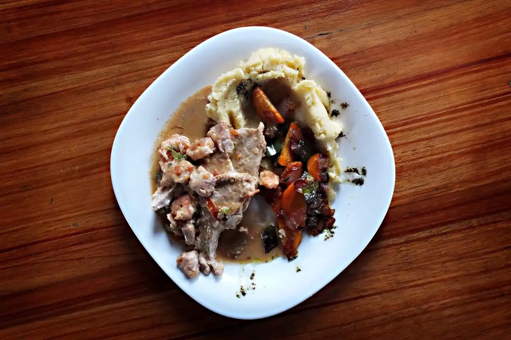

Almoço de segunda a sábado
Comida caseira, do jeito que você gosta.
Prato do dia, marmita e sobremesa feitos na hora. Monte seu pedido aqui e envie pelo WhatsApp.

Cardápio de hoje
Toque em + para montar seu pedido. Ele vai pronto para o WhatsApp do restaurante.
Feito aqui, todo dia
Aqui o restaurante conta a sua história.

Comida do dia
O cardápio muda todo dia e é atualizado no site.
Entrega no Centro
Pedido pelo WhatsApp, entrega no horário do almoço.
Marmita para levar
Para quem almoça no trabalho ou em casa.
Horários e endereço
Praça Exemplo, 45 · Centro
- Segunda a sexta11h às 15h
- Sábado11h às 14h
- DomingoFechado